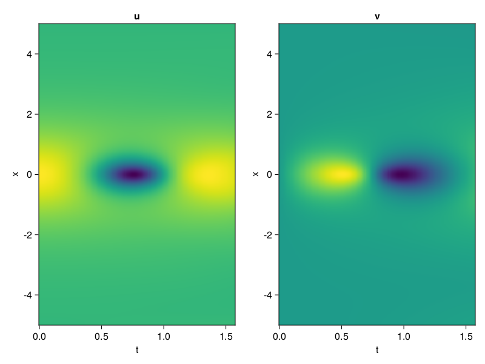
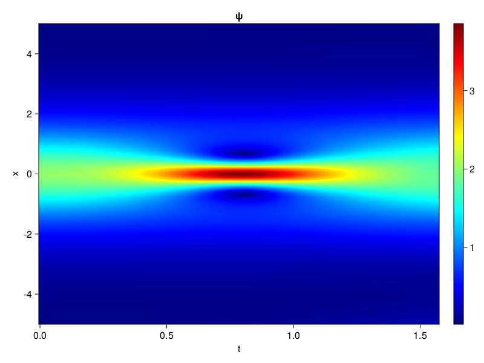
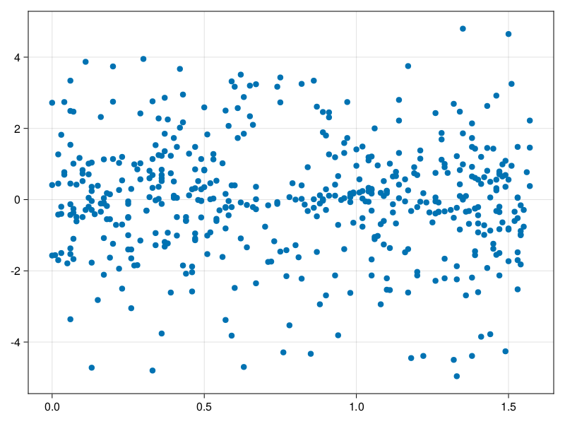

Schrödinger equation
The nonlinear Shrödinger equation is given by
\[\mathrm{i} \partial_t \psi=-\frac{1}{2} \sigma \partial_{x x} \psi-\beta|\psi|^2 \psi\]
Let $\sigma=\beta=1, \psi=u+v i$, the equation can be transformed into a system of partial differential equations
using ModelingToolkit, IntervalSets, Sophon, CairoMakie
using Optimization, OptimizationOptimJL
@parameters x,t
@variables u(..), v(..)
Dₜ = Differential(t)
Dₓ² = Differential(x)^2
eqs=[Dₜ(u(x,t)) ~ -Dₓ²(v(x,t))/2 - (abs2(v(x,t)) + abs2(u(x,t))) * v(x,t),
Dₜ(v(x,t)) ~ Dₓ²(u(x,t))/2 + (abs2(v(x,t)) + abs2(u(x,t))) * u(x,t)]
bcs = [u(x, 0.0) ~ 2sech(x),
v(x, 0.0) ~ 0.0,
u(-5.0, t) ~ u(5.0, t),
v(-5.0, t) ~ v(5.0, t)]
domains = [x ∈ Interval(-5.0, 5.0),
t ∈ Interval(0.0, π/2)]
@named pde_system = PDESystem(eqs, bcs, domains, [x,t], [u(x,t),v(x,t)])\[ \begin{align} \frac{\mathrm{d}}{\mathrm{d}t} u\left( x, t \right) =& - \frac{1}{2} \frac{\mathrm{d}^{2}}{\mathrm{d}x^{2}} v\left( x, t \right) - \left( \left|u\left( x, t \right)\right|^{2} + \left|v\left( x, t \right)\right|^{2} \right) v\left( x, t \right) \\ \frac{\mathrm{d}}{\mathrm{d}t} v\left( x, t \right) =& \frac{1}{2} \frac{\mathrm{d}^{2}}{\mathrm{d}x^{2}} u\left( x, t \right) + \left( \left|u\left( x, t \right)\right|^{2} + \left|v\left( x, t \right)\right|^{2} \right) u\left( x, t \right) \end{align} \]
pinn = PINN(u = Siren(2,1; hidden_dims=16,num_layers=4, omega = 1.0),
v = Siren(2,1; hidden_dims=16,num_layers=4, omega = 1.0))
sampler = QuasiRandomSampler(500, (200,200,20,20))
strategy = NonAdaptiveTraining(1,(10,10,1,1))
prob = Sophon.discretize(pde_system, pinn, sampler, strategy)OptimizationProblem. In-place: true
u0: ComponentVector{Float64}(u = (layer_1 = (weight = [-0.49747002124786377 -0.23374927043914795; 0.3348184823989868 0.06331002712249756; … ; 0.05901944637298584 -0.12454617023468018; -0.39131003618240356 -0.4324682354927063], bias = [0.0; 0.0; … ; 0.0; 0.0;;]), layer_2 = (weight = [0.2724827527999878 -0.5507397055625916 … 0.4334683120250702 -0.4809180200099945; -0.03542786091566086 -0.4989984929561615 … -0.3102319538593292 0.5241022706031799; … ; -0.08702730387449265 -0.3019842207431793 … -0.22918084263801575 0.6009532809257507; -0.3888280689716339 0.0947810485959053 … -0.4995676875114441 0.5654544830322266], bias = [0.0; 0.0; … ; 0.0; 0.0;;]), layer_3 = (weight = [0.3402584493160248 -0.4203667640686035 … 0.37175610661506653 0.5559743642807007; -0.39686673879623413 0.003927717916667461 … 0.4248794913291931 -0.5973747968673706; … ; 0.3210485875606537 0.12255429476499557 … -0.6070727109909058 0.5930310487747192; 0.2797536849975586 0.3752961754798889 … 0.27448850870132446 -0.44678783416748047], bias = [0.0; 0.0; … ; 0.0; 0.0;;]), layer_4 = (weight = [0.5685672760009766 0.3443334698677063 … -0.30603229999542236 -0.351681113243103; -0.08218298852443695 -0.29793334007263184 … 0.05217183753848076 -0.4288315176963806; … ; -0.5142062306404114 0.0957496166229248 … 0.29826703667640686 -0.4926794171333313; -0.41157588362693787 0.5360509753227234 … 0.1774560660123825 0.5694155097007751], bias = [0.0; 0.0; … ; 0.0; 0.0;;]), layer_5 = (weight = [-0.3716195225715637 -0.6112146973609924 … -0.4412575960159302 -0.5113481879234314], bias = [0.0;;])), v = (layer_1 = (weight = [-0.05577200651168823 0.1640568971633911; 0.38844096660614014 0.1986713409423828; … ; -0.09138143062591553 -0.43694400787353516; -0.3005440831184387 0.3218500018119812], bias = [0.0; 0.0; … ; 0.0; 0.0;;]), layer_2 = (weight = [0.27577659487724304 -0.22465050220489502 … 0.1930353045463562 -0.31646808981895447; 0.3711205720901489 0.5234496593475342 … -0.25909847021102905 0.09969602525234222; … ; 0.029536211863160133 0.571799635887146 … 0.5677317976951599 0.5986562371253967; 0.4073353707790375 0.3984598219394684 … -0.3912477493286133 -0.3330085575580597], bias = [0.0; 0.0; … ; 0.0; 0.0;;]), layer_3 = (weight = [-0.07614563405513763 0.06937162578105927 … -0.2284209132194519 0.49733203649520874; 0.5634650588035583 0.6085704565048218 … -0.1870497763156891 0.37142637372016907; … ; 0.18919424712657928 0.5747683048248291 … -0.1842540055513382 0.43936455249786377; -0.28589877486228943 0.18407385051250458 … 0.5707806944847107 -0.1577819138765335], bias = [0.0; 0.0; … ; 0.0; 0.0;;]), layer_4 = (weight = [0.15003934502601624 0.19452138245105743 … -0.21593870222568512 0.23499934375286102; -0.11186622828245163 0.4306688904762268 … 0.04431435465812683 -0.23413443565368652; … ; 0.14876219630241394 -0.12050385773181915 … 0.23540040850639343 -0.33237797021865845; -0.4914512634277344 0.01637977361679077 … -0.16388095915317535 -0.029140185564756393], bias = [0.0; 0.0; … ; 0.0; 0.0;;]), layer_5 = (weight = [-0.2654615044593811 -0.11728570610284805 … -0.530360758304596 -0.21240445971488953], bias = [0.0;;])))Now we train the neural nets and resample data while training.
function train(pde_system, prob, sampler, strategy, resample_period = 500, n=10)
bfgs = BFGS()
res = Optimization.solve(prob, bfgs; maxiters=2000)
for i in 1:n
data = Sophon.sample(pde_system, sampler)
prob = remake(prob; u0=res.u, p=data)
res = Optimization.solve(prob, bfgs; maxiters=resample_period)
end
return res
end
res = train(pde_system, prob, sampler, strategy)u: ComponentVector{Float64}(u = (layer_1 = (weight = [-0.5417605435703834 0.1418670486806411; 1.1958615213345092 -0.029552118861563642; … ; 0.47118569343390054 0.003542178435439658; -1.2949099458530533 -0.38971403826631873], bias = [-0.007577681544252667; 0.09415568035097013; … ; -0.1000396215334154; 0.2172237173363015;;]), layer_2 = (weight = [0.19986964110505992 -0.2128011779451593 … 0.34386613117300563 0.021233064734277596; 0.016180962149721777 -0.12209550066421743 … -0.30172448147284003 0.631281319018448; … ; 0.09705255986842 -0.48422423955037747 … -0.34603464250703203 0.6641628308216431; -0.43285772045011356 -0.3327514013341814 … -0.6653184883176513 0.2225369662691508], bias = [-0.39372478359226454; 0.1149777754302468; … ; 0.006547546551695024; 0.2737352191983276;;]), layer_3 = (weight = [0.04566679426615904 -0.2528408976761181 … 0.3173806390309038 0.8133621772373446; -0.46733349424524917 -0.07579461389184237 … 0.17235246073692104 -0.13747740008528528; … ; 0.631530583289505 0.20696377986007264 … -0.21875228908434055 0.318162617149671; 0.10234641925510309 0.3744931750971933 … 0.2757289880385951 -0.21452962821274751], bias = [0.1348827746631681; 0.17087341691824373; … ; 0.20625586859782133; -0.1502095035221643;;]), layer_4 = (weight = [0.5775887250049581 0.4042817836796036 … -0.5324749780678552 -0.516059970130495; -0.18346492930601893 -0.4344722713724006 … 0.17861282993301833 -0.5130220027510619; … ; -0.021593413301499113 0.27276012981949393 … 0.09001680211270886 -0.1754121312820114; -0.7255384700459526 0.3730028164113805 … 1.1362790700232899 0.6471723795226961], bias = [0.1459611122949728; 0.19780674004833423; … ; 0.16243865625164303; -0.39837987289261845;;]), layer_5 = (weight = [-0.631396711265132 -0.6053442497710688 … -0.6890061664255315 -1.3245221794303594], bias = [-0.3087968936853022;;])), v = (layer_1 = (weight = [-0.15693125978124303 0.19980629447950693; 0.46243858706459506 0.29418970863258137; … ; -0.3599855448210961 -0.07239362014597694; -0.23523116739473354 0.3263778447669081], bias = [-0.05981644256059713; -0.3937095309654144; … ; -0.15148874774899473; 0.25999742697711425;;]), layer_2 = (weight = [0.20352044259482563 -0.08262912519064884 … 0.4309450920439622 -0.34092295223622604; 0.22291724521596362 0.513023708508588 … -0.37019579134165714 0.25419654092081406; … ; -0.07279422308016846 0.564183412715328 … 0.5567224387969323 0.5956297076924283; 0.5042994494661633 0.6685503830656557 … -0.7198178503518401 -0.30195020057477606], bias = [0.03301231716446448; -0.27389179385340257; … ; -0.28790517304642504; 0.6161144167268348;;]), layer_3 = (weight = [-0.2923818227807529 0.31025237843550657 … -0.20696847757390416 1.0215650073003777; 0.7089456773610733 0.3420944013659195 … -0.4115865285282267 0.22810975103564715; … ; 0.39773198821966976 0.4337742026871075 … -0.3475612731866128 0.9929191687422197; -0.2528119087334807 0.3174469127009111 … 0.4449157767373782 -0.2802967407598638], bias = [0.20051934969791685; -0.014099562195571983; … ; -0.16563025879971682; 0.10072606725721175;;]), layer_4 = (weight = [-0.13927698461707863 0.15697852204111223 … -0.08270084064296009 0.009439849167966984; -0.5677283309146048 0.4202118154037512 … -0.024957167502587228 -0.3328837733567739; … ; -0.08237209415491396 -0.0672837724560373 … 0.4558899262353971 0.11074819883744424; -0.32468789963341577 -0.1418337091220796 … -0.036448847759982465 0.05390859231184502], bias = [0.13378006011532928; -0.12119471279754519; … ; -0.23771954696705674; 0.28943688910934157;;]), layer_5 = (weight = [-0.33069870165054854 -0.5981142029881381 … -0.41862902089023885 -0.11695860201223926], bias = [0.21933247204365608;;])))phi = pinn.phi
ps = res.u
xs, ts= [infimum(d.domain):0.01:supremum(d.domain) for d in pde_system.domain]
u = [sum(phi.u(([x,t]), ps.u)) for x in xs, t in ts]
v = [sum(phi.v(([x,t]), ps.v)) for x in xs, t in ts]
ψ = @. sqrt(u^2+ v^2)
axis = (xlabel="t", ylabel="x", title="u")
fig, ax1, hm1 = heatmap(ts, xs, u', axis=axis)
ax2, hm2= heatmap(fig[1, end+1], ts, xs, v', axis= merge(axis, (; title="v")))
display(fig)
axis = (xlabel="t", ylabel="x", title="ψ")
fig, ax1, hm1 = heatmap(ts, xs, ψ', axis=axis, colormap=:jet)
Colorbar(fig[:, end+1], hm1)
display(fig)
Customize Sampling
Bascially any sampling method is supportted. For example we can sample data according to the predicted solution.
using StatsBase
data = vec([[x, t] for x in xs, t in ts])
wv = vec(ψ)
new_data = wsample(data, wv, 500)
new_data = reduce(hcat, new_data)
fig, ax = scatter(new_data[2,:], new_data[1,:])
prob.p[1] = new_data
prob.p[2] = new_data
prob = remake(prob; u0 = res.u)
# res = Optimization.solve(prob, bfgs; maxiters=1000)OptimizationProblem. In-place: true
u0: ComponentVector{Float64}(u = (layer_1 = (weight = [-0.5417605435703834 0.1418670486806411; 1.1958615213345092 -0.029552118861563642; … ; 0.47118569343390054 0.003542178435439658; -1.2949099458530533 -0.38971403826631873], bias = [-0.007577681544252667; 0.09415568035097013; … ; -0.1000396215334154; 0.2172237173363015;;]), layer_2 = (weight = [0.19986964110505992 -0.2128011779451593 … 0.34386613117300563 0.021233064734277596; 0.016180962149721777 -0.12209550066421743 … -0.30172448147284003 0.631281319018448; … ; 0.09705255986842 -0.48422423955037747 … -0.34603464250703203 0.6641628308216431; -0.43285772045011356 -0.3327514013341814 … -0.6653184883176513 0.2225369662691508], bias = [-0.39372478359226454; 0.1149777754302468; … ; 0.006547546551695024; 0.2737352191983276;;]), layer_3 = (weight = [0.04566679426615904 -0.2528408976761181 … 0.3173806390309038 0.8133621772373446; -0.46733349424524917 -0.07579461389184237 … 0.17235246073692104 -0.13747740008528528; … ; 0.631530583289505 0.20696377986007264 … -0.21875228908434055 0.318162617149671; 0.10234641925510309 0.3744931750971933 … 0.2757289880385951 -0.21452962821274751], bias = [0.1348827746631681; 0.17087341691824373; … ; 0.20625586859782133; -0.1502095035221643;;]), layer_4 = (weight = [0.5775887250049581 0.4042817836796036 … -0.5324749780678552 -0.516059970130495; -0.18346492930601893 -0.4344722713724006 … 0.17861282993301833 -0.5130220027510619; … ; -0.021593413301499113 0.27276012981949393 … 0.09001680211270886 -0.1754121312820114; -0.7255384700459526 0.3730028164113805 … 1.1362790700232899 0.6471723795226961], bias = [0.1459611122949728; 0.19780674004833423; … ; 0.16243865625164303; -0.39837987289261845;;]), layer_5 = (weight = [-0.631396711265132 -0.6053442497710688 … -0.6890061664255315 -1.3245221794303594], bias = [-0.3087968936853022;;])), v = (layer_1 = (weight = [-0.15693125978124303 0.19980629447950693; 0.46243858706459506 0.29418970863258137; … ; -0.3599855448210961 -0.07239362014597694; -0.23523116739473354 0.3263778447669081], bias = [-0.05981644256059713; -0.3937095309654144; … ; -0.15148874774899473; 0.25999742697711425;;]), layer_2 = (weight = [0.20352044259482563 -0.08262912519064884 … 0.4309450920439622 -0.34092295223622604; 0.22291724521596362 0.513023708508588 … -0.37019579134165714 0.25419654092081406; … ; -0.07279422308016846 0.564183412715328 … 0.5567224387969323 0.5956297076924283; 0.5042994494661633 0.6685503830656557 … -0.7198178503518401 -0.30195020057477606], bias = [0.03301231716446448; -0.27389179385340257; … ; -0.28790517304642504; 0.6161144167268348;;]), layer_3 = (weight = [-0.2923818227807529 0.31025237843550657 … -0.20696847757390416 1.0215650073003777; 0.7089456773610733 0.3420944013659195 … -0.4115865285282267 0.22810975103564715; … ; 0.39773198821966976 0.4337742026871075 … -0.3475612731866128 0.9929191687422197; -0.2528119087334807 0.3174469127009111 … 0.4449157767373782 -0.2802967407598638], bias = [0.20051934969791685; -0.014099562195571983; … ; -0.16563025879971682; 0.10072606725721175;;]), layer_4 = (weight = [-0.13927698461707863 0.15697852204111223 … -0.08270084064296009 0.009439849167966984; -0.5677283309146048 0.4202118154037512 … -0.024957167502587228 -0.3328837733567739; … ; -0.08237209415491396 -0.0672837724560373 … 0.4558899262353971 0.11074819883744424; -0.32468789963341577 -0.1418337091220796 … -0.036448847759982465 0.05390859231184502], bias = [0.13378006011532928; -0.12119471279754519; … ; -0.23771954696705674; 0.28943688910934157;;]), layer_5 = (weight = [-0.33069870165054854 -0.5981142029881381 … -0.41862902089023885 -0.11695860201223926], bias = [0.21933247204365608;;])))